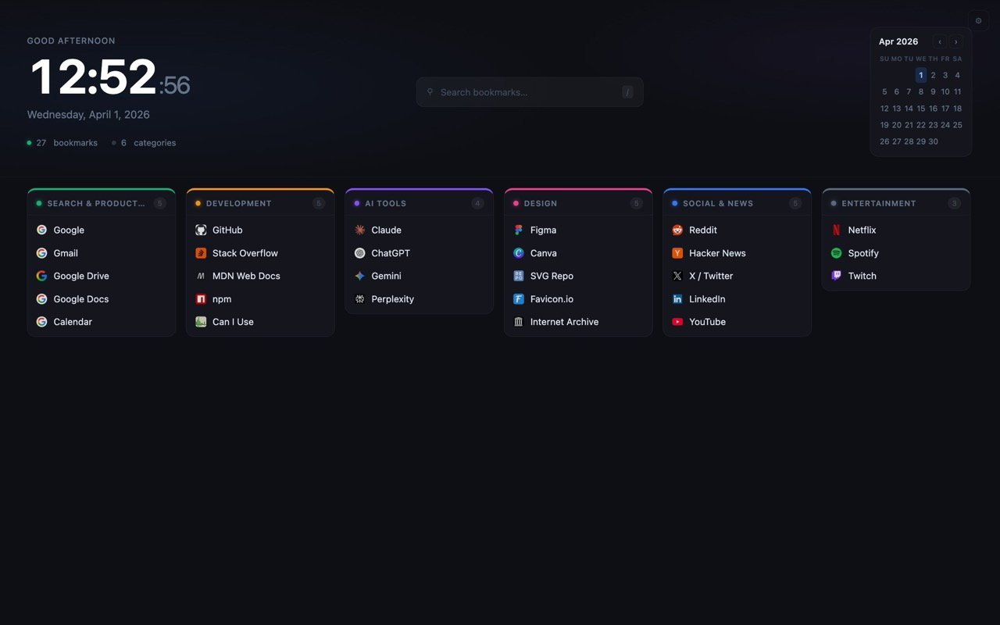
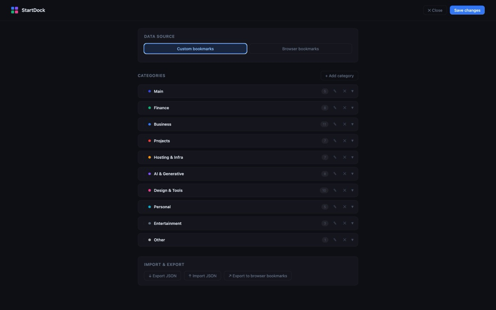

Chrome Extension
Your new tab,
reimagined.
StartDock replaces Chrome's default new-tab page with a clean, organised bookmark dashboard — complete with categories, live search, a clock, and cross-device sync.

StartDock replaces Chrome's default new-tab page with a clean, organised bookmark dashboard — complete with categories, live search, a clock, and cross-device sync.
Group bookmarks into colour-coded categories. Drag, reorder, and customise each one to match your workflow.
Press / to instantly filter every bookmark across all categories. No mouse required.
A live clock with a personalised greeting and a mini monthly calendar — always in view on every new tab.
All data is stored in chrome.storage.sync — your bookmarks follow you across every Chrome installation.
Back up your entire bookmark set as JSON and restore it anytime. Migrating to a new machine takes seconds.
Right-click any page and add it directly to a category — no need to open settings.


git clone https://github.com/sumedhe/startdock.git
chrome://extensions and enable Developer mode